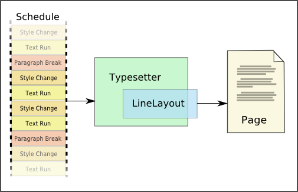

EAText::Typesetter
What is Typesetter?
Typesetter is
one of the major features of EAText. It is a class which is responsible for
formatting the display of text.
Why is it
called Typesetter? In the days of manual printing presses, skilled artisans
known as typesetters would be responsible for arranging the small brass
letters into a frame, which would be covered with ink and then pressed against
the paper to produce a printed page. The Typesetter class does many of the same
functions as a human typesetter:
- Handles the breaking of text into individual lines.
- Aligns the text on the left, right, or center of the page, or can perform
justification, which is the spreading of text to the view extents.
- Chooses character shapes which correspond to the currently selected font, and
allows for multiple fonts of mixed sizes to be used simultaneously on a line.
- Supports the required functionality for the creation of a multi-locale GUI text editor.
- Adds appropriate text decorations, such as underline and strikethrough.
- Handles right-to-left languages such as Hebrew and Arabic.
- Handles bi-directional text, which is the mixing of right-to-left and left-to-right text on the same line or paragraph.
- Allows for embedding of non-text objects, such as images or borders, into the flow
of text.
- Applies font-specified custom kerning between text glyphs.
- Automatically inserts ligatures, which are adjacent characters that are 'fused' together, like 'æ', 'ffl', or Arabic's لا).
Ligatures are important in languages such as Arabic and Hindi.
- Allows for properly truncating lines or paragraphs with ellipses when needed.
- Allows for properly laying out text as password text.
Like a human typesetter, the Typesetter works from source
text. The source text contains mostly regular text, but can also contain
other items - text style changes, non-text objects, paragraph breaks, and so on.
Typesetter refers to this text as a schedule, because it contains a list of
items to be processed. Like a real schedule, it also allows for
schedule changes - as long as the scheduled items have not yet occured (you can
change the future, but you can't change the past.)
Typesetter can be used to quickly lay out a simple unformatted string of text, and it can be used as the text engine behind a fully formatted display such as HTML. Typesetter can also be used as the text engine behind an interactive multi-language text editor. In fact we have implemented each of these with EAText.
Basic Examples
The following is a simple example of how to use Typesetter to lay out a simple unwrapped line of text.
Typesetter typesetter;
typesetter.LayoutLine(pSomeTextParagraph, paragraphLength, 0, 0, pSomeTextStyle);
LineLayout& lineLayout = typesetter.GetLineLayout();
The following is a simple example of how to use Typesetter to lay out a properly paragraph of text.
Typesetter typesetter;
LineLayout lineLayout;
typesetter.LayoutParagraph(pSomeTextParagraph, paragraphLength, 0, 0, 100, 100, pSomeTextStyle, lineLayout);
To do more advanced layout, you probably want to use Typesetter's lower level functionality, which allows you to lay out a paragraph line by line. You can, for example, alter the paragraph width between lines in order to wrap text around something on the display.
Typesetter typesetter;
typesetter.SetDefaultTextStyle(pSomeTextStyle);
typesetter.AddTextRun(pSomeTextParagraph, paragraphLength);
typesetter.SetLayoutSpace(200, 0, 0);
while(typesetter.GetLineState() != Typesetter::kLineStateComplete)
{
typesetter.FinalizeLine();
LineLayout& lineLayout = typesetter.GetLineLayout();
typesetter.NextLine(true);
}
Typesetter can be used to do quite a bit more than the above. You can use its scheduling functionality to lay out a paragraph of text of mixed font styles, inline graphical objects, and bidi direction changes.
Advanced Operation
The following (somewhat oversimplified) diagram shows the basic theory of
operation of the Typesetter scheduling system:

Initially, the process starts by creating a Typesetter instance and adding
some schedule items to it. The Typesetter will process schedule items until it
has enough items to make up a complete line. Calling
Typesetter::FinalizeLine() at this point will generate a LineLayout
structure (which is embedded within the Typesetter, but accessible to the
application), which contains the positions of all of the character glyphs and
other line content. If there isn't enough to fill a complete line,
FinalizeLine() will still generate a 'partial' line, such as the line at
the end of a paragraph.
After the line has been drawn, calling Typesetter::NextLine()
will proceed to the next line.
At any point, you can call Typesetter::GetLineState() to
determine if there is sufficient material remaining in the schedule to form a
complete line. There are three possible return states: kLineStateFull,
to indicate that there is at least one full line of text to be processed;
kLineStatePartial to indicate that there is less than a full line, and
kLineStateComplete to indicate that the schedule has been exhausted
and there are no more items to process.
Layout Pipeline
This section is of interest only to programmers who want to understand how advanced layout is done by Typesetter.
Here we describe the design of a proper pipeline (ordered steps) for layout of styled text with mixed scripts and mixed font support. Said a different way, this section describes a pipeline for the layout and display of HTML text that is savvy to currently significant writing systems, including bidirectional systems. This pipeline is a superset of simpler pipelines, such as the pipeline to layout a single line of ASCII English text. You don't need to be doing bidirectional text or HTML or even your own kind of styled text to use this layout pipeline, but using such a pipeline will give you an upwardly compatible pathway for a day in which you want such functionality.
- Divide text into paragraphs.
- A paragraph is delimited by newline characters or is simply any self-contained text. In HTML, paragraphs are defined by block block elements.
- Divide the paragraph into runs of same direction.
- These runs are given a direction embedding level, based on Unicode UAX9 (The Bidirectional Algorithm).
- It's not necessary that new paragraph strings be created, it's only necessary to know the run information.
- This step is only necessary if there is script of differing directions in the paragraph.
- Do shaping of text.
- This means making a string of font glyph ids from the original Unicode paragraph text.
- It will be useful or necessary to provide a way to map items from the glyph string back to the original text.
- It may be useful to attach additional information to the glyphs, such as clustering information.
- Use font info to decide if you can merge characters (e.g. à instead of a + `) or need to split characters (e.g. a + ` instead of just à).
- This includes making choices about which font to use for individual glyphs, as a single font may not support all required glyphs, especially when a run includes text of two differing scripts.
- Do script-specific glyph substituations and repositioning, such as Thai decoration substitutions and Arabic or Hindi contextual substitutions.
- This includes implementation of ligatures.
- This includes the application of custom kerning pair information.
- No bidirectional reordering is done here; the text is shaped in logical order (not visual order).
- Some steps here may be necessary only for complex scripts (e.g. Arabic, Devanagari, Thai).
- Do line breaking.
- Line breaking is done based on Unicode TR14 (Line Breaking Properties), with a dictionary approach suggested for Thai.
- Line breaking is based on the shaped glyph metrics and not the original text.
- Line breaking is done on the entire paragraph and not individual runs, though you can break and lay out one line at a time in a paragraph.
- Line breaking is done based on the advance widths of the shaped character text in logical order (not visual order) and is done beforeany justification and reordering is done.
- Some kinds of line breaking (e.g. hyphenation) might require going back to step 3 (shaping).
- This step is only necessary if the text needs to wrap within some boundary; it is unnecesary if the text is on a single line without bounds.
- Apply ellipsis if enabled.
- Ellipsis is applied only to the final line of a paragraph.
- Ellipsis replaces the trailing glyphs at the last fitting glyph cluster boundary.
- Apply justification if enabled.
- Justification is not applied to the final line of a paragraph.
- Justificiation is implemented via inserting spaces and/or kashidas (Arabic) between words and/or characters.
- This either generates a new set of advance widths and/or inserts space and/or kashida characters.
- Do reordering of runs
- Apply the methods described in Unicode UAX9 (The Bidirectional Algorithm).
- Reordering is applied to the glyph indexes generated earlier and is done per line.
- This step is only necessary if bidirectional script is supported and present.
- Generate a display list.
- This is based on the font's glyph metrics and texture (bitmap) metrics.
- Information about font coloring or any other rendering or texture shading settings would be associated with this display list.
- Algorithmic effects such as underlines and strike-throughs would be associated with this display list.
- This step is only necessary if you need to draw the text.
Typesetter Glossary
This is a list of terms used in conjunction with Typesetter, For a general EAText glossary, refer to this page.
- Bidi
- Refers to bidirectionality of text, whereby with some languages the text direction changes from going left-to-right to going right-to-left midstream.
- Font
- A font consists of a collection of glyph shapes, mappings of unicode characters to specific glyph shapes, and information about how to place those glyphs.
- FontSelection
- A collection of fonts that are selected based on a given text style. Because any given font may not have a complete mapping from characters to glyphs, it may be neccessary to utilize more than one font to represent a single block of text, even if that text is all the same "style".
- Glyph
- An on-screen unit of text. Often a glyph corresponds to a single Unicode character, though this is not always the case.
- Index
- The offset of a character within a character string. (See also 'Position')
- Line
- A horizontal row of text glyphs.
- Line Break
- The division between two adjacent lines. Line breaks can be explicit, as a result of a 'line break' instruction in the schedule, or implicit, as a result of the word-wrap algorithm.
- Metrics
- A data structing containing various measurements relating to text, such as line height, paragraph height, line length, etc.
- Object
- A non-textual item to be inserted in the flow of text, such as an image or border.
- Paragraph
- A collection of adjacent lines delimited on each side by a paragraph break. Paragraphs are typically rendered such that each paragraph is visually separated from its neighbors, either by inserting extra vertical space between paragraphs, or by indenting the first line of each paragraph.
- Paragraph Break
- A schedule instruction that causes the typesetter to end the current paragraph and start a new one.
- Pick
- The act of selecting (via the mouse or other pointing device) a specific character within a line or paragraph. Typically used as a verb, although can also refer to the result of a picking operation.
- Position
- The on-screen location of a glyph or other text element, in pixel coordinates. (See also 'Index')
- Schedule
- The list of items to be processed by the typesetter. The schedule can contain text runs, style changes, non-text objects, and various kinds of breaks.
- TextStyle
- A collection of parameters which influence the appearance of a text run, such as font family, size, alignment, color, and so on.
- Text Run
- A sequence of text characters having all the same text style.